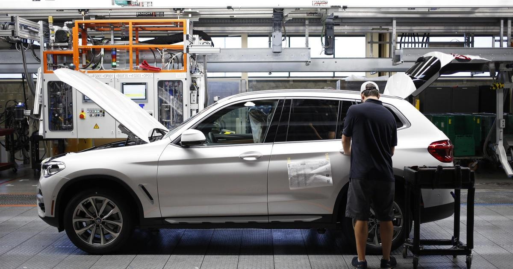

BMW places do not drive label on 90,000 recalled vehiclesBMW is warning the owners of about 90,000 older vehicles in the U.S. not to drive them due to an increasing threat that the air bags might explode in a crash. The warning covers vehicles from the 2000 through 2006 that previously had been recalled to replace faulty and dangerous air bag inflators made by Takata. The company used ammonium nitrate to inflate the air bags in a crash. But the chemical can deteriorate over time when exposed to heat and can blow apart a metal canister, hurling shrapnel that can injure or kill drivers and passengers. Models involved in the recall include the 2000 through 2006 3 Series, the 2000 through 2003 5 Series and the 2000 through 2004 X5. All have driver's front air bag inflators made by Takata. The National Highway Traffic Safety Administration (NHTSA) said drivers should park their vehicles and contact BMW for more information. Repairs are available at no cost to owners, as well as mobile repair and free towing. Owners can go to BMW's website to check if their vehicle is affected or call BMW customer relations at (866) 835-8615. NHTSA also has a recall lookup tool on its website. "Risk to vehicle occupants is dire" "These vehicles are 17 to 22 years old, and the risk to vehicle occupants is dire," NHTSA said in a statement Thursday. "These are some of the oldest Takata air bags under recall and have an extremely high probability of failure during a crash." Since 2009, the exploding air bags made by Takata have killed at least 33 people worldwide, . About 400 air bag injuries have happened in the U.S. The BMW recall comes a couple months after other automakers recalled their vehicles for the same Takata-produced air bags. Safety officials earlier this year told drivers of older Honda, Ford and Stellantis vehicles with Takata inflators . Honda said it has already replaced 99% of the dangerous inflators. "These inflators are two decades old now, and they pose a 50% chance of rupturing in even a minor crash," NHTSA Acting Administrator Ann Carlson said in February. "Don't gamble with your life or the life of someone you love — schedule your free repair today before it's too late." Potential for the dangerous malfunction led to the largest series of auto recalls in U.S. history, with at least 67 million Takata inflators recalled. The U.S. government says that many have not been repaired. About 100 million inflators have been recalled worldwide. The exploding air bags pushed Takata Corp. of Japan . for more features. |
 |